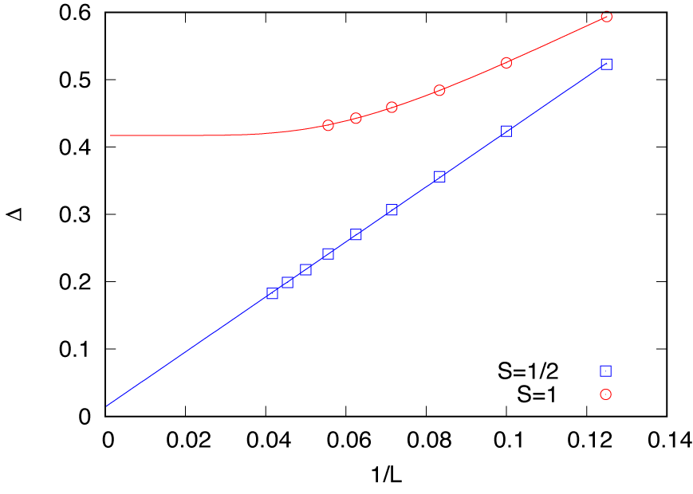

3.2. HPhi による moller 計算の例¶
このチュートリアルについて¶
これは、量子多体問題の正確な対角化方法を実行するためのオープンソースソフトウェアパッケージである HPhi を用いた moller の例です。
この例では、周期境界条件下の \(S=1/2\) (2S_1 ディレクトリ) と \(S=1\) (2S_2) 反強磁性ハイゼンベルク鎖の励起ギャップ \(\Delta\) のシステムサイズ依存性を計算します。
moller を使用することで、異なるシステムサイズの計算を並列に実行します。
これはHPhi 公式チュートリアルの セクション 1.4 に対応しています。
準備¶
moller （HTP-tools）パッケージと HPhi がインストールされていることを確認してください。このチュートリアルでは、ISSP のスーパーコンピュータシステム ohtaka を使用して計算を実行します。
実行方法¶
データセットを準備する
2S_1,2S_2に含まれるスクリプトmake_inputs.shを実行します。$ bash ./make_inputs.sh
L_8,L_10, ...,L_24(2S_2の場合はL_18まで) の作業ディレクトリが生成されます。 ディレクトリのリストはlist.datファイルに書き込まれます。 さらに、作業ディレクトリからエネルギーギャップを集めるためのシェルスクリプト、extract_gap.shが生成されます。mollerを使用してジョブスクリプトを生成するinput.yamlからジョブスクリプトを生成し、job.shというファイル名で保存します。$ moller -o job.sh input.yaml
バッチジョブを実行する
ジョブリストを引数としてバッチジョブを送信します。
$ sbatch job.sh list.dat
状態を確認する
タスク実行の状態は
moller_statusプログラムによって確認できます。$ moller_status input.yaml list.dat
結果を集める
計算が終了した後、ジョブからエネルギーギャップを以下のようにして集めます。
$ bash extract_gap.sh
このスクリプトは、長さ \(L\) とギャップ \(\Delta\) のペアをテキストファイル
gap.datに書き込みます。結果を視覚化するために、Gnuplot ファイル
gap.pltが利用可能です。 このファイルでは、得られたギャップデータが予想される曲線によってフィットされます。(3.1)¶\[\Delta(L; S=1/2) = \Delta_\infty + A/L\]および
(3.2)¶\[\Delta(L; S=1) = \Delta_\infty + B\exp(-CL).\]グラフは次のコマンドで描画できます。
$ gnuplot --persist gap.plt
 図 3.3 スピンギャップの有限サイズ効果¶
\(S=1/2\) の場合、対数補正によりスピンギャップは有限のままです。一方で、\(S=1\) の場合、外挿値 \(\Delta_\infty = 0.417(1)\) は以前の結果（例えば、QMC による \(\Delta_\infty = 0.41048(6)\) （Todo and Kato, PRL 87, 047203 (2001)））とよくあっています。